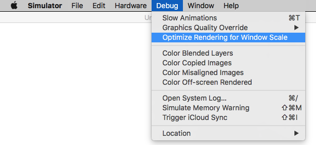
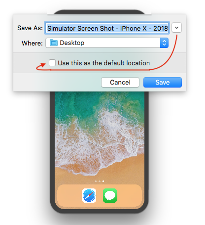
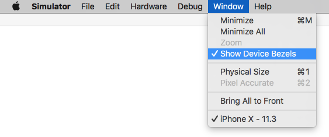

Take screenshots in the iOS simulator
I want to take a screenshot of my iOS application when it is running in the simulator, and save the screenshot on my Mac. How can I do this?
Answer
It's just as simple as command+s or File > Save Screen Shot in iOS
Simulator. It will appear on your desktop by default.
Suggest
An update with Xcode 11.4 simulator
To capture a screen shot, click on 'Camera' icon/action button, on the top bar of simulator.

OR
Select Save Screen Shot menu item, from File menu.
File => Save Screen Shot
Use ⌘ + S to capture a screen shot.
(Use window + s, if you are using windows/non-apple keyboard).

See for more details: How to change simulator scale options with Xcode 9+.
Tip 1: How do you get screen shot with 100% (a scale with actual device size) that can be uploaded on AppStore?
Disable Optimize Rendering for Window scale from Debug menu, before
you take a screen shot.
Here is an option
Menubar ▶ Debug ▶ Disable "Optimize Rendering for Window scale"

Tip 2: Where is screen shot saved (Default Path)? How to change default path?
Simulator saves screen shot file on (logged-in user's) desktop and it's default path.
To change default path (with Xcode 9+), press and hold ⌥ Option (alt) button
from keyboard, while you take a screen shot.
Or
Using Mac Keyboad: Press keys ⌥ Option + ⌘ + s all together.
It will show to a dialog with file storage options and also allows to
set/change default path.

Tip 3: How to take a screen shot with Device Bezel?
Enable Show Device Bezel from Window menu.
Here is an option
Menubar ▶ Window ▶ Enable "Show Device Bezel"

Now,
- Press
⌘+shift+4+Spacebar, all together in Mac Keyboard. (A window snap capture mode will become active) - Select
Simulatorwindow/frame, that you want to capture. It will save screenshot with device bezel (with shadow effect in background) on (logged-in user's) desktop.
You can also remove the Simulator toolbar as described here.